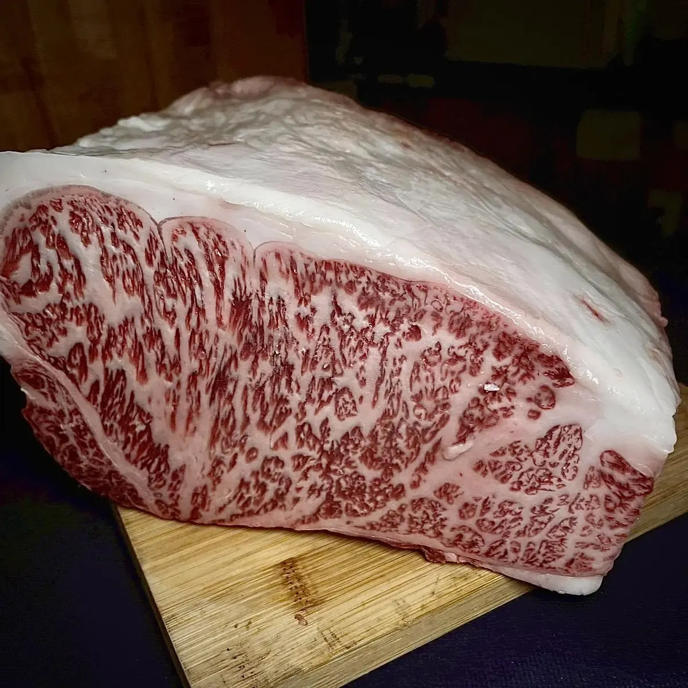

和牛小知識 · 2026年11月
和牛、品牌牛與A5，各是什麼意思？

在日本的菜單上，常會看到「和牛」「松阪牛」「A5」這些字。它們彼此有關，但意思並不相同。這篇簡單說明，讓您點餐時心裡有數。
「和牛」是品種，不是品牌
在日本，只有四個日本牛品種——黑毛和種、褐毛和種、日本短角種、無角和種——以及它們之間的雜交種，才能標示為「和牛」。而且必須在日本出生、在日本飼育，透過品種登錄與全國的牛隻追溯系統來確認。
一般吃到的和牛大多是黑毛和種。「國產牛」則是另一種標示，只代表主要在日本飼育，品種不限。在海外飼育的和牛品種，在日本會被標示為進口牛肉，而不是和牛。
品牌牛：產地與一套規則
品牌牛（銘柄牛）是在特定地區、依照當地協會訂定的規則飼育的和牛。日本有數百個牛肉品牌，各自訂定標準——品種、在哪裡飼育多久、由誰飼育，有時還有最低等級。以下是本店使用的兩個品牌：
- 松阪牛（三重縣）：未曾生產過的黑毛和種母牛，約12個月大以前進入松阪牛生產區域，並在該區域飼育最久、最後也在該區域。每一頭都登錄於松阪牛個體識別管理系統，並附有證明書。
- 飛驒牛（岐阜縣）：由登錄農家在岐阜縣內飼育最久、肥育14個月以上的黑毛和種，且肉質等級為3級以上。
也就是說，松阪牛與飛驒牛都是和牛，但和牛並不都是品牌牛。

「A5」真正的意思
等級由日本食肉格付協會針對每一頭牛的屠體評定，分為兩個部分：
- 英文字母（A、B、C）代表步留等級：一頭牛能取得多少肉。A最高，與味道無關。
- 數字（1～5）代表肉質等級，依四項評定：油花、肉的顏色與光澤、緊實度與紋理、脂肪的顏色與品質。四項中最低的一項就是等級。
A5是兩項的最高等級，代表油花豐富，但它是屠體的等級，並不保證每個部位都合您的口味。等級較低的紅肉部位，也可能非常美味。
等級只針對屠體的肉。橫膈膜肋側、隔膜背面、牛舌、小腸等內臟類部位沒有等級，所以不會標示「A5」。這些部位比起等級，鮮度更重要。
燒肉殿的選擇
本店選用各品牌最好吃的部位：A5松阪牛選用牛里脊，來自松阪市飯高町的單一牧場；飛驒牛選用飛驒牛橫膈膜肋側、飛驒牛隔膜背面、飛驒牛舌與飛驒牛小腸，加工隔天就從飛驒高山送達。其他和牛部位也以A5為主精心挑選。
詳情請見〈兩大和牛品牌，各自最好吃的部位〉。

日本菜單上常見的字
- 和牛——四個日本品種之一，在日本出生、飼育
- 黒毛和牛——黑毛和種的和牛
- 国産牛——國產牛（在日本飼育，品種不限）
- 松阪牛——松阪牛 · 飛騨牛——飛驒牛
- A5——步留與肉質皆為最高等級
在本店不需要看懂日文：平板菜單有中文・英文，並附照片。